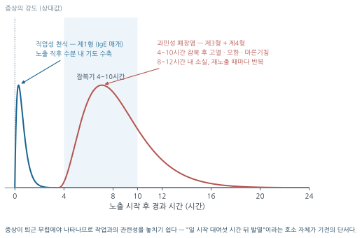
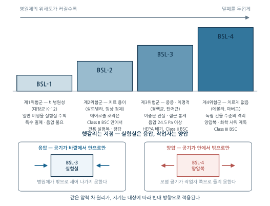
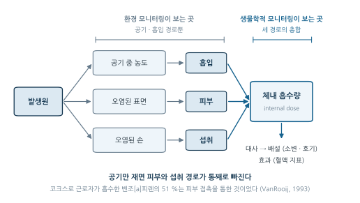
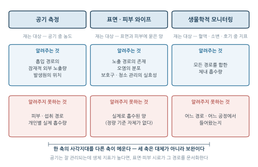
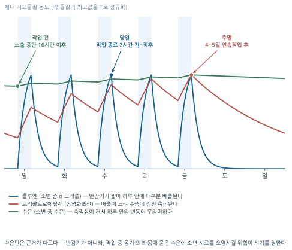

11주차. 생물학적 유해인자와 생물학적 모니터링
전파 경로에 따른 생물학적 유해인자의 분류, 주요 생물학적 직업병, 생물안전등급(BSL), 생물학적 모니터링과 노출지표(BEI)
학습목표
이 주를 학습한 후 여러분은 다음을 할 수 있어야 합니다:
- 생물학적 유해인자를 전파 경로(혈액매개·공기매개·곤충 및 동물매개)에 따라 분류하고, 비감염성 유기분진까지 포괄하는 개념으로 설명할 수 있다
- 주요 생물학적 직업병(쯔쯔가무시증, 브루셀라병, 과민성 폐장염, 레지오넬라증 등)과 고위험 직종을 연결할 수 있다
- 생물안전등급(BSL 1~4)의 분류 기준과 시설·장비(생물안전작업대) 요건을 설명할 수 있다
- 혈액매개 감염 예방 원칙과 주사침 찔림 사고의 사후 관리 절차를 설명할 수 있다
- 생물학적 모니터링의 개념과 공기 측정(환경 모니터링)과의 차이·상호보완 관계를 설명할 수 있다
- 피부 노출이 전체 노출에서 갖는 비중을 설명하고, 표면·피부 와이프 시료채취의 목적·절차·한계를 공기 측정 및 생물학적 모니터링과 구분하여 설명할 수 있다
- 생물학적 노출지표(BEI)의 세 종류(원물질·대사산물·생화학적 효과지표)를 구분하고, 반감기에 따른 시료 채취 시기와 크레아티닌 보정의 원리를 적용할 수 있다
1. 생물학적 유해인자의 분류 · 생물학적 유해인자에 의한 직업병 · 생물안전과 관리 · 생물학적 모니터링의 원리 · 피부 노출…
1.1 생물학적 유해인자의 분류
네 번째 유해인자
1주차에서 유해인자를 물리적·화학적·생물학적·인간공학적 인자로 분류했다. 산업안전보건법령(법 제104조, 시행규칙 별표 18)도 유해인자를 화학적 인자, 물리적 인자, 생물학적 인자로 나누어 관리한다. 생물학적 인자가 앞의 둘과 다른 점은, 유해인자가 스스로 증식하는 생명체라는 것이다. 화학물질은 발생원을 막으면 농도가 내려가지만, 병원체는 냉각탑의 물속에서, 건초 더미 속에서, 감염된 동물의 몸속에서 스스로 불어난다. 그래서 관리의 초점도 농도 저감이 아니라 증식 환경의 제거와 전파 경로의 차단에 놓인다.
전파 경로에 따른 3분류
생물학적 인자는 병원체의 종류(세균·바이러스·진균)보다 전파 기전(transmission mechanism)을 기준으로 분류하는 것이 실용적이다. 전파 경로가 같으면 차단 대책도 같기 때문이다 — 이 분류가 곧 관리 대책의 설계도가 된다.
| 분류 | 전파 기전 | 대표 병원체·질환 | 고위험 직종 |
|---|---|---|---|
| 혈액매개 | 감염된 혈액·체액이 점막, 손상된 피부, 주사침 찔림 등 침습적 상처를 통해 유입 | HIV, B형 간염(HBV), C형 간염(HCV), 매독(Treponema pallidum) | 의료기관 종사자, 임상병리사, 응급구조사, 실험실 연구원, 폐기물 처리업자 |
| 공기매개 | 5 μm 미만의 비말핵(droplet nuclei)·에어로졸이 호흡기로 흡입. 전파 반경이 넓어 집단 감염의 주 원인 | 결핵, 수두, 홍역, COVID-19 | 밀폐·밀집·밀접 작업장, 병동, 다중이용시설, 콜센터, 물류센터 |
| 곤충 및 동물매개 | 감염된 곤충(진드기·모기)이나 동물·가축과의 직접 접촉, 배설물 등을 통한 간접 접촉 (인수공통감염) | 쯔쯔가무시증, 렙토스피라증, 신증후군출혈열, 탄저병, 브루셀라병 | 농업·축산업, 임업·벌목, 야외 건설(배수로 공사 등), 수의사 |
감염 너머 — 비감염성 유기분진
생물학적 유해인자는 감염성 병원체에 국한되지 않는다. 곰팡이 포자, 세균의 내독소(endotoxin), 동식물 유래 단백질 분진 같은 유기분진은 감염을 일으키지 않고도 면역 체계를 과도하게 자극하여 알레르기성·과민성 질환을 유발한다(§1.2의 과민성 폐장염이 대표적이다). 따라서 산업보건에서의 생물학적 유해인자는 감염성 병원체 + 면역유발 물질을 모두 포괄하는 개념으로 접근해야 한다.
1.2 생물학적 유해인자에 의한 직업병
생물학적 직업병은 특정 병원체에 집중적으로 노출되는 직종에서 특징적으로 나타난다. 원인 규명의 출발점은 1주차의 라마찌니가 가르친 그 질문 — 직업력이다. 발열 환자가 배수로 공사 노동자인지, 축산 농가 종사자인지, 냉각탑 보수공인지에 따라 감별 진단의 방향이 완전히 달라진다.
곤충 및 동물매개 감염병 — 야외·축산 작업
야외 작업자의 감염병은 계절(가을 수확기)과 작업 장소의 지리적 특성이 강하게 반영된다. 산업안전보건기준에 관한 규칙 제8장(병원체에 의한 건강장해의 예방)은 고위험 작업에 대한 사업주의 예방·사후 조치 의무를 규정한다.
Orientia tsutsugamushi에 감염된 털진드기 유충에 물려 발생한다. 농업·임업, 배수로 공사 등 들쥐 서식지 주변 야외 작업자에게 빈발한다.
- 임상 특징: 잠복기 후 두통·고열·오한 등 심한 감기 유사 증상. 물린 부위의 검은색 가피(eschar)가 특징적 소견
- 사업주의 예방 의무: 긴 소매 작업복·긴 바지·장화 착용, 기피제 제공, 발생 우려 장소에서의 음식물 섭취 제한, 작업 후 즉시 목욕과 작업복 세탁
무엇: 털진드기 유충에 물린 자리에 생긴 검은 딱지(가피)의 근접 임상 사진. 주변 홍반과 중앙의 흑색 괴사가 함께 보이고, 부위를 알 수 있도록 발목·서혜부·겨드랑이 등 실제 호발 부위의 사진이면 가장 좋다.
왜: 가피는 이 질환의 결정적 감별 소견이다. 발열 환자에서 이것을 찾느냐 못 찾느냐가 진단을 가른다. 글로 “검은색 가피”라고만 읽은 학생은 실제 병변을 보고도 알아보지 못한다 — 연습문제 1의 a 사례가 바로 이 판별이다.
출처 후보: 질병관리청 감염병 포털 교육자료, CDC Public Health Image Library(PHIL, 대부분 PD), Wellcome Collection(CC BY 4.0), 대한감염학회·대한피부과학회 증례보고(사용 허락 필요).
대안: 사진 확보가 어려우면 호발 부위(겨드랑이·서혜부·무릎 뒤 등)를 표시한 인체 모식도에 가피의 크기·모양을 도해로 넣어 대체한다.
축산 분야의 대표 질환은 브루셀라병(Brucellosis)이다. 감염된 소·양·돼지의 혈액, 분비물, 태반에 피부 상처나 점막이 노출되거나 살균되지 않은 유제품을 섭취할 때 감염된다. 축산 농가, 도축장 근로자, 수의사가 고위험군이며, 불규칙한 주기로 발열이 반복되는 파상열(undulant fever)과 심한 피로감·관절통이 특징이다. 이 밖에 들쥐 배설물에 오염된 습지·흙이 상처에 닿아 감염되는 렙토스피라증, 한탄바이러스에 의한 신증후군출혈열이 야외 작업자를 위협한다.
호흡기·공기매개 직업병 — 유기분진과 수계 환경
공기 중 생물학적 입자의 침착 부위는 화학적 분진과 마찬가지로 공기역학적 직경이 결정한다(1주차 §3.1). 미세할수록 폐포까지 도달한다.
과민성 폐장염 (Hypersensitivity Pneumonitis)
가장 대표적인 생물학적 호흡기 직업병이다. 병원체가 몸속에서 증식하는 감염이 아니라, 0.5~5 μm의 미세 유기분진(진균 포자, 세균, 동물성 단백질)이 말초 폐실질과 종말세기관지에 침착하여 일으키는 비감염성 육아종성 간질성 폐포염이다.
발생 기전이 흔한 알레르기(천식)와 다르다는 점이 핵심이다.
| 구분 | 직업성 천식 | 과민성 폐장염 |
|---|---|---|
| 면역 기전 | 제1형 (IgE 매개, 즉시형) | 제3형(면역복합체 침착, Arthus형) + 제4형(T-림프구·대식세포 매개) 복합 |
| 반응 시간 | 노출 직후 (수분) | 노출 후 4~10시간의 잠복기 |
| 주 병변 부위 | 기관지 (기도 수축) | 폐포벽 (염증, 육아종) |
| 혈청 소견 | 특이 IgE | 혈중 침강항체 (특이 IgG) |
| 만성화 결과 | 기도 과민성 지속 | 비가역적 폐섬유화 → 호흡부전 |
두 질환의 차이는 시간축 위에서 가장 뚜렷하게 드러난다(그림 12.1).

전형적 사례가 농부폐(Farmer’s Lung)다. 건초 저장 시 증식하는 호온성 방선균(thermophilic actinomycetes)에 노출되는 농업 종사자에게서 다발한다. 감작된 근로자가 재노출되면 4~10시간 후 고열·오한·마른기침·근육통 등 독감 유사 증상이 나타났다가 8~12시간 내에 소실되고, 재노출 때마다 반복된다. 만성화되면 폐포벽이 파괴되고 폐섬유화로 진행한다.
무엇: 급성기 과민성 폐장염의 고해상도 흉부 CT — 미만성 간유리음영과 소엽중심성 결절, 호기상의 모자이크 감쇄(air trapping) — 와, 가능하면 만성기의 상엽 우위 폐섬유화·견인성 기관지확장증 영상을 나란히. 급성과 만성 두 장을 대비시키는 구도가 가장 좋다.
왜: “재노출을 계속하면 비가역적 섬유화로 간다”는 이 절의 결론이 영상 두 장의 대비로 즉시 설명된다. 급성기 소견이 가역적이라는 점이 보여야, 왜 조기 분리가 유일한 치료인지가 설득력을 갖는다.
출처 후보: Radiopaedia(증례별 라이선스 확인 필요, 다수 CC BY-NC-SA), Tuberculosis and Respiratory Diseases(대한결핵및호흡기학회, Open Access) 직업성 과민성 폐장염 종설의 수록 영상, NIOSH/CDC 자료.
대안: 영상 대신 폐포·세기관지 단면 모식도(항원 침착 → 육아종성 염증 → 섬유화)를 3단계로 그려 대체한다.
과민성 폐장염의 근본 치료는 원인 항원을 규명하고 그 작업환경에서 근로자를 완전히 분리하는 것이다. 항원 노출이 계속되는 한 어떤 약물도 섬유화의 진행을 막지 못한다. “치료보다 예방, 예방의 핵심은 노출 차단”이라는 산업위생의 원칙이 가장 선명하게 드러나는 질환이다.
레지오넬라증 (Legionellosis)
수계 환경의 질환이다. 오염된 냉각탑, 건물 배관, 가습기에서 증식한 Legionella pneumophila가 미세한 에어로졸로 분사되어 호흡기로 유입된다. 건물 설비 관리자, 배관·냉각탑 보수 근로자에서 집단 발병 위험이 크다. 중증 폐렴형인 레지오넬라병과 경미한 독감형인 폰티악 열(Pontiac fever)의 두 형태로 나타난다. 병원체가 설비 안에서 증식한다는 점에서, 대책도 치료가 아니라 설비의 세척·소독 관리다.
공기매개 신종감염병
COVID-19, 메르스 같은 신종감염병에 대해 사업장은 KOSHA Guide H-220-2023에 따라 관심–주의–경계–심각 단계별 방역 관리 체계를 가동한다. 기계식 환기의 외부 공기 도입량 증대(1일 3회 이상 환기), CO₂ 농도 점검, 작업자 간 거리 두기 등 — 9주차에서 배운 전체환기가 감염 관리의 도구로 쓰이는 장면이다.
1.3 생물안전과 관리
병원체를 직접 취급하는 의료기관·연구시설·진단검사실은 근로자 보호와 병원체의 환경 유출 차단을 위해 생물안전(Biosafety) 관리 체계를 갖추어야 한다. 원리는 간단하다 — 병원체가 위험할수록 더 두꺼운 물리적 밀폐(containment)로 감싼다.
생물안전등급 (BSL)
질병관리청 고시와 산업안전보건기준에 관한 규칙은 미생물을 위해도(병원성, 전파력, 치료·예방약의 유무)에 따라 위험군 4단계로 나누고, 각각에 상응하는 생물안전등급(Biosafety Level, BSL) 시설을 요구한다. BSL은 건물 구조만이 아니라 물리적 밀폐 수준 + 공조 설계 + 개인보호구 + 작업 표준절차를 묶은 종합 체계다.
| 등급 | 취급 병원체 (위험군) | 핵심 시설·운영 요건 |
|---|---|---|
| BSL-1 | 제1위험군: 건강한 성인에게 질병을 일으키지 않는 비병원성 미생물 (예: 대장균 K-12) | 일반 미생물 실험실 수칙(GMT). 특수 밀폐·음압 불요. 고압멸균기, 덮개 있는 폐기물 용기 |
| BSL-2 | 제2위험군: 감염 시 질병을 유발할 수 있으나 치료가 용이 (예: 살모넬라, 일반 임상 검체) | 허가된 인원만 입실. 에어로졸 발생 조작은 Class II 생물안전작업대(BSC) 내에서. 전용 실험복·장갑 필수 |
| BSL-3 | 제3위험군: 에어로졸 흡입으로 중증·치명적 질환 유발 가능 (예: 결핵균, SARS-CoV, 탄저균) | 엄격한 접근 통제, 이중문 전실. 내부를 외부 대비 –24.5 Pa 이상의 음압으로 유지, 배기는 HEPA 여과. 모든 감염성 조작은 Class II 이상 BSC 내부에서 |
| BSL-4 | 제4위험군: 백신·치료제가 없는 최고 위험 병원체 (예: 에볼라, 마버그, 니파 바이러스) | 독립 건물 수준의 최고도 격리. 양압복 착용, 퇴실 시 화학 샤워 제독. 모든 조작은 완전 밀폐형 Class III BSC 내에서 |

숫자가 헷갈리기 쉬운 지점 하나 — 실험실은 음압, 작업자는 양압이다. BSL-3 실험실이 음압인 것은 공기가 항상 바깥에서 안쪽으로만 흐르게 하여 병원체의 유출을 막기 위해서고, BSL-4의 양압복은 반대로 보호복 내부 압력을 높여 오염 공기가 작업자 쪽으로 새어 들지 못하게 하기 위해서다. 같은 압력 차 원리가 지키는 대상에 따라 반대 방향으로 적용된다 (음압·양압의 원리는 9주차 참조).
생물안전작업대 (BSC)
BSL 체계의 핵심 공학적 장비는 생물안전작업대(Biological Safety Cabinet)다. 화학 실험실의 흄후드가 작업자만 보호하는 것과 달리, BSC는 감염성 에어로졸로부터 작업자·환경·시료를 함께 보호한다.
| Class | 보호 대상 | 구조 | 용도 |
|---|---|---|---|
| I | 작업자 (유입 공기 무여과 → 시료 보호 안 됨) | 배기만 HEPA 여과 | 제한적 |
| II | 작업자 + 환경 + 시료 (3중 보호) | 유입·배기 모두 HEPA 여과 | BSL-2·3의 표준 |
| III | 최고 수준 밀폐 | 양구형 고무장갑이 달린 완전 밀폐 글러브박스, 내부 강한 음압, 이중 HEPA 배기 | BSL-4 및 고위험 BSL-3 |
모든 등급의 실험실에서 입 피펫팅(mouth pipetting)은 금지되며 전동 피펫을 사용한다 — 위험도와 무관하게 적용되는 기본 수칙이다.
무엇: ① Class II BSC 실물 사진(작업자가 전면 개구부에 팔을 넣고 조작하는 장면 — 개구부·전면 유리·HEPA 필터 위치가 보이는 구도)과 ② 같은 장비의 기류 단면도(전면 유입 기류(air curtain), 하강기류, 유입·배기 HEPA 여과 경로를 화살표로). ③ 가능하면 Class III 글러브박스 실물 사진을 함께.
왜: “작업자·환경·시료를 함께 보호한다”는 Class II의 정의는 기류가 어디로 흐르는지를 봐야 이해된다. 화학 흄후드(작업자만 보호)와의 차이도 기류 그림 한 장으로 갈린다. 실물 사진은 학생이 현장에서 장비를 알아보게 한다.
출처 후보: CDC/NIH Biosafety in Microbiological and Biomedical Laboratories(BMBL, 미국 정부 저작물로 PD) 수록 도판, CDC PHIL, 질병관리청 생물안전 지침, WHO Laboratory Biosafety Manual(CC BY-NC-SA).
대안: 사진 없이 기류 단면도만이라도 자체 제작한다 — 개구부 유입, 하강기류, HEPA 배기의 세 화살표와 보호 대상(작업자·시료·환경)을 표시.
혈액매개 감염의 예방과 사후 관리
의료·실험 종사자의 혈액매개 감염(HIV·HBV·HCV) 예방의 최전선은 주사침 찔림 사고(needle-stick injury) 방지다.
예방 수칙 (산업안전보건기준에 관한 규칙, KOSHA Guide E-M-4-2025):
- 침 잠금형 안전 일회용 주사기 도입
- 사용한 주사침은 구부리거나 자르지 않는다
- 뚜껑 다시 씌우기(recapping) 금지 — 찔림 사고의 대표 원인
- 즉시 견고한 전용 수거 용기에 폐기 (용기의 2/3 이상 채우지 않음)
노출 사고 발생 시: 노출 부위를 짜내며 즉시 흐르는 물로 세척·소독하고 보건관리자에게 보고한다. 감염 원인(환자·시료)의 감염 상태를 신속히 파악하고, 노출 후 예방조치(PEP, Post-Exposure Prophylaxis)를 가동한다 — B형 간염 노출 우려 시 24시간 이내 면역글로불린(HBIG) 근육주사, HIV 노출 시 항레트로바이러스제 예방요법. 시간이 곧 예방 효과이므로, 사고 대응 프로토콜은 사고 전에 수립되어 있어야 한다.
1.4 생물학적 모니터링의 원리
공기만 재서는 모자라다
2~3주차의 작업환경측정은 공기 중 농도를 재어 노출기준(TWA·STEL·C)과 비교한다. 그러나 공기 농도는 잠재적 외부 노출량(external exposure)일 뿐이다. 근로자가 실제로 체내에 흡수한 양(internal dose)은 호흡량, 피부 흡수, 보호구 착용 여부에 따라 같은 작업장 안에서도 사람마다 다르다. 이 간극을 메우는 것이 생물학적 모니터링(Biological Monitoring)이다.

생물학적 노출평가란 근로자의 혈액·소변·호기 등 생체 시료를 채취·분석하여 유해물질 원물질, 대사산물, 또는 노출로 인한 생화학적 변화를 정량하는 과정이다. 산업안전보건법 제130조의 특수건강진단(14주차)의 일부로 의무적으로 실시된다.
환경 모니터링 대비 세 가지 강점
다중 흡수 경로의 총합 반영 — 공기 측정은 호흡기 유입만 대변한다. 그러나 톨루엔, 디메틸포름아미드(DMF), 페놀 같은 물질은 피부 흡수율이 매우 높고, 오염된 손을 통한 섭취도 일어난다. 생물학적 모니터링은 호흡기·피부·소화기 모든 경로의 총합을 보여준다.
작업 강도와 개인차의 보정 — 같은 공기 농도라도 중작업 근로자는 호흡량이 커서 실제 흡수량이 훨씬 많다. 간 대사 효소의 유전적 다형성, 체지방 분포, 성별·연령에 따라 배출 반감기도 다르다. 생체 시료는 이 모든 변동성을 통과한 최종 결과값이다.
개인보호구 실효성의 검증 — 공기 농도는 높은데 생물학적 지표가 낮다면 보호구가 유효하게 작동한 것이고, 공기 농도는 낮은데 지표가 높다면 밀착 불량·미착용·피부 노출 등 보호 프로그램 어딘가에 구멍이 있다는 뜻이다(13주차의 밀착도 문제를 사후에 적발하는 감시 도구가 된다).
ACGIH는 생물학적 모니터링이 산업보건 전문가에게 무엇을 해 주는지를 다음과 같이 열거한다. 앞의 세 강점이 왜 중요한지 더 넓게 보여준다.
- 흡입 외에 피부·소화기를 통한 흡수를 확인한다
- 체내 부담(body burden)을 평가한다
- 과거 노출을 재구성한다
- 근로자의 비직업적 노출을 찾아낸다
- 개인보호구와 공학적 대책의 효능을 검증한다
- 작업 관행(work practices)을 감시한다
4번을 눈여겨보자 — 비직업적 노출은 §1.4에서는 “교란 요인”이지만, 여기서는 오히려 찾아내야 할 대상이다. 같은 현상이 목적에 따라 잡음이 되기도 하고 신호가 되기도 한다.
한계 — 단독으로 확진하지 않는다
생물학적 모니터링에도 약점이 있다. 혈액 채취처럼 침습적일 수 있고, 식습관·음주·약물·비직업적 노출이 결과를 교란한다(흡연자의 카복시헤모글로빈 상승이 대표적이다). 또한 체내 최종 결과만 보여주므로 어느 공정에서 얼마나 노출됐는지 역추적하지 못한다 — 발생원 추적과 설비 개선의 방향은 여전히 환경 모니터링의 몫이다. 따라서 두 모니터링은 대체 관계가 아니라 상호보완 관계이며, 판단은 환경 측정 자료와 문진을 병행하여 입체적으로 내린다.
1.5 피부 노출의 평가 — 표면·피부 시료채취
§1.4에서 생물학적 모니터링의 첫째 강점으로 “모든 흡수 경로의 총합”을 들었다. 그런데 총합을 알아도 대책은 세워지지 않는다. 생체 시료는 물질이 몸에 들어왔다는 것만 말해 줄 뿐, 어느 경로로 들어왔는지는 말해 주지 않기 때문이다(OSHA Technical Manual). 경로를 짚으려면 공기 시료 외에 표면과 피부를 직접 재는 시료채취가 따로 있어야 한다. 노출 평가의 도구가 세 축으로 짜이는 이유다.
피부는 두 가지 방식으로 문제를 일으킨다
① 국소 영향. 강산·강염기 같은 1차 자극물(암모니아, 염화수소, 수산화나트륨 등)은 접촉 직후 발적을 일으킨다. 반면 에틸렌옥사이드, 에피클로로히드린, 하이드록실아민처럼 피부의 수분층에서 분해된 뒤에야 자극물을 만들어 내는 물질은 지연성 자극을 보인다. 반복적인 저농도 노출로 피부가 감작되어 생기는 알레르기성 접촉피부염은 6가 크롬, 에폭시수지, 이소시아네이트, 아크릴레이트, 방향족 아민, 금속가공유 등 매우 넓은 범위의 물질에서 나타나며, 감작 부위의 경계가 뚜렷해 접촉 부위를 역으로 알려주기도 한다. 코크스로·타르 유래 다환방향족처럼 자외선을 받아야 반응하는 광감작 물질도 있다.
② 전신 흡수. 피부는 장벽인 동시에 흡수 경로다. 방어의 주역은 표피 바깥층의 각질층(stratum corneum)으로, 두께 10~40 μm에 단백질 약 40 %·수분 40 %·지질 20 %로 이루어져 있고 약 2주마다 교체된다. 화학물질은 이 죽은 세포층을 수동 확산으로 통과한 뒤 진피의 혈류에 실려 몸속으로 들어간다. 따라서 각질층이 손상되면 흡수는 급격히 커진다 — 물리적 상처, 자극·감작·일광화상으로 상한 피부, 그리고 피부의 지질을 녹여 내는 유기용제가 대표적이다.
장갑을 낀 상태에서 화학물질이 파과(breakthrough)되면, 물질이 피부와 장갑 사이에 갇힌다. 맨피부에 묻었을 때보다 접촉 시간이 길고, 장갑 속 땀으로 피부가 수화되어 있으며, 마찰과 온도까지 높다. 그래서 장갑 속 파과나 바늘구멍 누출은 맨피부 노출보다 흡수를 더 키울 수 있다. 정교한 작업을 위해 장갑을 잠깐 벗었다 다시 끼는 습관도 같은 결과를 낳는다.
제조사가 제시하는 파과시간(ASTM F739)도 그대로 믿을 수 없다. 시험 온도보다 피부 온도가 높아 실제 투과는 더 빠르고, 공구를 쥐는 압력점에서는 장갑이 얇아지며, 열화·재사용·제조 배치 차이·혼합용제 조건에서 파과시간이 크게 짧아진다. 장갑은 선정하고 끝나는 것이 아니라 사용 조건에서 검증해야 하는 대책이다(13주차).
노출기준표의 “Skin(피부)” 표기는 바로 이 전신 흡수가 유의하다는 경고다. 다만 이 표기는 완전한 목록이 아니어서, 헥손·크실렌·퍼클로로에틸렌처럼 피부 위험이 있으면서도 표기가 없는 물질이 있다. 표기가 없다고 피부 경로를 지워서는 안 된다는 뜻이다. 표기 외에 참고할 수 있는 지표로는 옥탄올–물 분배계수(log Kow 가 −0.5 ~ +3.0인 물질이 가장 잘 침투한다 — 각질층에 녹으려면 지용성이, 그 아래로 가려면 수용성이 함께 필요하다)와 증기위험비 (VHR)가 있다. VHR이 낮은 물질, 즉 저휘발성 물질일수록 공기 측정의 의미가 작고 피부 경로의 비중이 커진다 — 많은 농약이 여기 해당한다.
코크스로 근로자를 대상으로 생물학적 모니터링과 공기 측정을 함께 수행한 연구에서, 흡수된 벤조[a]피렌 총량의 51 %가 피부 접촉을 통한 것으로 나타났다(VanRooij et al., 1993). 고무산업 근로자에서도 유전독성 물질의 노출이 폐보다 피부를 통해 더 크다는 보고가 있다(Vermeulen et al., 2003). 공기만 재고 있었다면 노출의 절반을 놓치고 있었던 셈이다.
세 가지 평가 축
세 도구는 각각 다른 지점을 본다. 하나가 다른 하나를 대신하지 못한다.
| 평가 축 | 재는 대상 | 알려주는 것 | 알려주지 못하는 것 |
|---|---|---|---|
| 공기 측정 | 공기 중 농도 | 흡입 경로의 잠재적 외부 노출량, 발생원의 위치 | 피부·섭취 경로, 개인별 실제 흡수량 |
| 표면·피부 시료채취 | 표면과 피부에 묻은 양 | 노출 경로의 존재, 오염의 분포, PPE·청소 관리의 실효성 | 실제로 흡수된 양(정량 기준 자체가 없다) |
| 생물학적 모니터링 | 혈액·소변·호기 중 지표물질 | 모든 경로를 합한 체내 흡수량 | 어느 경로·어느 공정에서 들어왔는지 |

세 축은 서로의 빈칸을 메운다. 공기 농도는 잘 관리되는데 생체 지표가 비정상적으로 높다면 피부나 섭취가 주 경로일 가능성이 크고, 여기에 표면 오염의 증거와 피부 보호구 미비의 기록이 더해지면 피부 노출은 비로소 문서화된 사실이 된다.
표면 와이프 시료채취
표면 와이프 시료채취(surface wipe sampling)는 작업장 표면에 근로자 노출로 이어질 수 있는 오염물이 있는지를 확인하는 방법이다. 표면의 액체·입자· 건조 잔류물은 ① 접촉을 통해 피부 노출이 되고, ② 음식물로 옮겨 가 우발적 섭취를 낳으며, ③ 침적 분진이 다시 날려 흡입 노출까지 만든다.
| 채취 지점 | 무엇을 확인하는가 |
|---|---|
| 작업면·공구 손잡이·문손잡이·조작 스위치 | 피부 접촉 경로의 존재. PPE가 요구되지 않는 구역이라면 피부 유해성의 근거가 된다 |
| “세척된” 호흡보호구의 안면부 밀착면 안쪽 | 보호구 세척·관리가 실제로 이루어지는가 — 호흡보호 프로그램의 실효성 |
| 휴게실·식탁·음수대 | 음식물 오염을 통한 섭취 경로 |
| 샤워·탈의실의 청결 구역 | 오염이 이 선을 넘었다면 가족에게까지 옮겨 가는 오염(take-home)의 신호 |
| 최근 청소한 구역 vs 하지 않은 구역 | 청소·정리정돈(housekeeping) 관리의 수준 차이 |
| 노출이 없을 것으로 예상되는 구역 | 대조 시료(reference control) — 상대적 오염 수준의 기준선 |
공기 중 비휘발성 물질이 침적되어 오염되었을 법한 표면인데도 와이프 결과가 깨끗하게 나오는 일이 있다. 근로자가 자주 만져서 오염물이 이미 손으로 옮겨 간 경우다. 그래서 자주 접촉하는 표면과 잘 접촉하지 않는 인접 표면을 함께 채취한다. 두 결과의 차이가 곧 “누군가의 피부로 옮겨 갔다”는 간접 증거가 된다.
정성과 정량. 문손잡이·공구 손잡이·수도꼭지처럼 불규칙한 표면은 면적을 규정할 수 없으므로 정성적으로 채취한다. 농도(단위 면적당 질량)를 알아야 하면 정해진 면적을 닦는다. 관례적 규격은 10 cm × 10 cm = 100 cm²로, 이는 근로자 손바닥 면적에 근사한 값이다. 즉 100 cm² 시료에서 검출된 양은 한 번의 접촉으로 손에 그대로 옮겨 갈 수 있는 양이라는 뜻이다.
이 대응을 이용한 경험칙이 제약산업에서 쓰인다. 8시간 TWA 노출기준에 성인의 1일 호흡량 10 m³를 곱해 최대허용용량을 구하고, 이를 손 면적 100 cm²로 나누어 표면 관리 기준을 잡는 방식이다. 노출기준이 1 μg/m³인 물질이라면 1 μg/m³ × 10 m³ = 10 μg이 최대허용용량이고, 표면 기준은 10 μg/100 cm² = 0.1 μg/cm²가 된다.
고독성 물질에서는 유해한 수준의 표면 오염이 눈에 보이지 않는다. 원료의약품의 육안 잔류 한계가 대략 1~5 μg/cm²인 데 비해, 잘 수행된 표면 와이프의 검출한계는 나노그램 수준이다. 납이나 6가 크롬처럼 독성이 큰 물질을 다루는 현장에서 “깨끗해 보인다”는 관찰이 아무 근거가 되지 못하는 이유이며, 와이프 시료채취가 필요한 이유이기도 하다.
채취 절차의 요점(OSHA Appendix C). 시료마다 분말이 없는 새 일회용 장갑을 끼고, 핀셋으로 필터를 꺼내며, 습식이 필요하면 증류수나 지정된 용매로 적신다(용매는 필터가 다 머금을 만큼만 — 표면에 남기지 않는다). 강한 압력으로 좌우 방향과 상하 방향을 모두 문지르고, 닦은 면적을 기록한다. 필터는 시료병에 넣어 번호를 매기고, 채취 위치를 사진·도면으로 남기며, 구역마다 닦지 않은 공시료(blank)를 최소 1개 함께 제출한다. 벤지딘·6가 크롬·MDA처럼 불안정한 물질은 시료병에 안정화 용액을 넣는 등 별도 취급이 필요하다. 평면에서는 카드지로 만든 일회용 10 cm × 10 cm 템플릿이 면적을 일정하게 해 주지만, 재사용하면 교차오염원이 되므로 한 번 쓰고 버린다.
Cr(VI)는 시료 매체 위에서 Cr(III)로 환원될 수 있다. 분석 대상이 채취 후에 사라져 버리는 것이므로, 절차 전체가 이 분해를 막는 데 맞춰져 있다.
- 매체: 평활면은 37 mm PVC 필터(공극 5 μm), 찢어지기 쉬운 거친 면은 무결합제 석영섬유 필터
- 도금 공정: 1 % 수산화나트륨(NaOH)을 코팅한 석영섬유 필터(도금 외 공정에는 사용 금지), 또는 코팅하지 않은 필터를 쓴 뒤 10 % Na₂CO₃ + 2 % NaHCO₃ 안정화 용액 5 mL가 든 유리 바이알에 즉시 넣는다
- 금속 핀셋 금지 — 핀셋 자체가 필터에 Cr(VI)를 묻힌다. PTFE 코팅 또는 플라스틱 핀셋을 쓴다
- 건식 와이프 — 수돗물의 금속 오염이 간섭하므로 적시지 않는다
- 닦는 순서: 바깥 가장자리에서 시작해 안쪽으로 점점 작은 동심 사각형을 그리고, 오염된 면이 안으로 가도록 접어 한 번 더 반복한다
- 도금·용접 공정의 와이프 시료는 채취 후 24시간 이내 분석실로 보낸다
절차의 세부가 까다로워 보이지만 논리는 하나다 — 분석실에 도착할 때까지 Cr(VI)를 Cr(VI)인 채로 붙잡아 두는 것. 시료의 무결성이 곧 결과다.
XRF는 표면의 금속 원소를 실시간(1회 약 1분)으로 측정한다. 침적 분진 속 금속이나 도장면의 금속 성분을 현장에서 바로 볼 수 있다는 것이 와이프에 대한 장점이다. 다만 X선은 물체를 투과하므로 표면과 기재 내부의 금속을 함께 잡는다. 그래서 제거 가능한 표면 오염량을 알려면 ① 청소 전에 한 번 측정하고, ② 금속 제거용 와이프로 육안 오염이 사라질 때까지 닦은 뒤, ③ 같은 지점을 다시 측정해 두 값의 차이를 취한다. 분석실 확인이 필요하면 같은 지점을 통상적인 와이프 방법으로 다시 채취한다.
피부 시료채취 (dermal sampling)
피부 시료채취는 피부에 실제로 닿은 양을 추정하는 방법으로, 부식성 물질처럼 피부 자체에 영향을 주는 물질과 흡수되어 전신 영향을 내는 물질 모두에 쓰인다. 방법은 크게 둘로 나뉜다.
- 직접법 — 피부에 닿는 양을 직접 측정한다.
- 차단법(interception): 흡착 패드(도시미터)를 피부나 의복 위에 붙여, 피부에 닿았을 물질을 대신 받아낸다. 노출 종료 후 패드를 회수해 분석하며, 접촉 시 색이 변하는 직독식 패드도 있다.
- 제거법(removal): 이미 피부에 침착한 물질을 회수한다. 증류수나 약한 세척액으로 헹궈 헹굼액을 분석하거나, 건식·습식 와이프로 닦아 분석한다. 세척액을 넣은 봉투에 손을 넣고 정해진 횟수만큼 흔들어 회수하는 방식도 쓰인다.
- 간접법 — 몸속으로 들어간 양을 측정한다. 즉 생물학적 모니터링(§1.4)이다.
피부 와이프의 실제. 수용성 물질은 증류수로 적신 패드로 닦는다. 일반적으로 가장 좋은 방법은 근로자 본인이 자기 피부를 닦게 한 뒤 패드를 깨끗한 용기에 넣고 표시·밀봉하게 하는 것이다. 대상 부위는 손·팔뚝·얼굴, 경우에 따라 발이다. 피부 채취에는 다른 용매를 쓰지 않고 증류수(또는 분석실이 승인한 물)만 사용하며, 물 공시료를 함께 제출한다.
장갑 안쪽 채취. 장갑을 통과한 노출을 확인하려면 직독식 패드나 활성탄 펠트 패드를 장갑 안에 넣는다. 이때 평소 쓰는 보호장갑 안에 일회용 장갑을 덧끼고 그 표면에 패드를 붙이도록 권장된다 — 패드의 시약이 피부에 닿지 않게 하고 땀의 영향도 줄이기 위해서다. 또한 같은 패드 하나를 작업복에 붙여 대조 시료로 삼는다. 공기 중 유입분을 이 대조값으로 보정해야 검출된 양이 장갑을 투과한 것인지, 장갑 입구로 들어온 것인지 구분할 수 있다. 다만 활성탄 패드는 분자량이 큰 물질에서 회수율이 낮아 노출을 과소평가할 수 있다.
한계 — 반정량이라는 사실을 잊지 않기
이 방법들의 한계는 자료에 분명히 적혀 있고, 결과 해석의 전제가 된다.
- 회수율이 일정하지 않다. 표면의 거칠기, 사용한 용매, 채취자의 기법에 따라 회수율이 달라진다. 그래서 표면 와이프는 반정량(semi-quantitative)에 그칠 수 있다. 피부 채취법(차단·제거 모두)은 회수율이 변동적이거나 정량적으로 확립되어 있지 않아 대체로 정성적이다.
- 비교할 기준값이 없다. 허용 가능한 표면 오염 수준을 정한 기준도, 피부 노출의 정량적 한계치를 정한 기준도 현재 존재하지 않는다. §1.5의 0.1 μg/cm² 같은 값은 규제 기준이 아니라 업계의 경험칙이다.
- 그럼에도 충분한 쓰임이 있다. “오염이 있다”는 정성적 확인만으로도 보호구의 선정·유지·세척이 부적절한지 판단하기에는 충분하다. 이 방법의 목적은 흡수량을 재는 것이 아니라 경로의 존재를 드러내는 것이다.
- 채취 순서에 유의한다. 피부 시료채취를 생물학적 모니터링 직전에 수행하면, 닦아 낸 만큼 체내 흡수가 줄어 생체 지표가 낮게 나올 수 있다.
- 현장 색변화 스왑 키트(납·크롬산·카드뮴·이소시아네이트 등)는 즉시 정성 판정이 가능하지만, 어두운 색 분진이나 붉은 도료에 의한 발색 간섭, 결과 지연(납 크롬산은 최대 18시간), 시험면 손상 같은 제약이 있다.
1.6 생물학적 노출지표 (BEI)
BEI의 의미
생물학적 노출지표(Biological Exposure Indices, BEI)는 주 40시간 일하는 건강한 근로자가 공기 중 노출기준(TWA) 수준에 지속적으로 노출되었을 때 생체 시료에서 검출될 것으로 예상되는 지표물질의 수치다. 질병의 진단 기준이 아니라, 노출이 경계선에 도달했음을 알리는 조기 경보다 — BEI 초과는 “병에 걸렸다”가 아니라 “노출 관리를 점검하라”로 읽어야 한다.
BEI가 설정되는 방식은 세 갈래다. 이 차이를 알아야 값을 옳게 해석할 수 있다.
| 설정 근거 | 의미 | 예 |
|---|---|---|
| TLV-TWA와의 대응 | 공기 중 노출이 TLV-TWA일 때 나올 것으로 기대되는 값 (대다수의 BEI) | 대부분의 유기용제 |
| 건강영향과의 직접 연관 | TLV에서 유도한 것이 아니라, 건강영향이 나타나는 수준에서 직접 설정 | 납 |
| 일반 인구의 배경 수준 | 건강 근거가 아니라 비노출 인구의 분포(95백분위수 등)에 기반 | “Pop” 주석이 붙은 지표 |
또한 TLV가 자극이나 호흡기 영향 같은 비전신적 영향을 근거로 정해진 물질이라도, 피부 등 다른 경로의 흡수가 유의하면 BEI를 따로 두기도 한다. 공기 중 기준만으로는 그 흡수를 포착할 수 없기 때문이다.
세 종류의 지표물질
무엇을 측정하느냐는 물질의 체내 대사 특성(toxicokinetics)이 결정한다.
| 종류 | 원리 | 대표 예 |
|---|---|---|
| 원물질 (unchanged substance) | 대사되지 않고 그대로 존재하는 물질을 측정. 반감기가 긴 축적성 중금속, 혈류로 직행하는 휘발성 물질 | 혈중 납, 소변·혈중 수은, 혈중 톨루엔·벤젠, 호기 중 일산화탄소 |
| 대사산물 (metabolite) | 간의 시토크롬 P450 등으로 수용성이 커져 소변으로 배출되는 변환 산물을 측정. 가장 널리 쓰인다 | 벤젠 → 소변 중 t,t-뮤콘산·S-페닐머캅토산 / 톨루엔 → o-크레졸 / 크실렌 → 메틸마뇨산 / 스티렌 → 만델산 + 페닐글리옥실산 |
| 생화학적 효과지표 (biochemical effect) | 유해물질이 단백질·효소와 결합해 생긴 병리적 변화를 직접 측정. 가역성이 낮은 후행 지표 | CO → 카복시헤모글로빈(COHb) / 메트헤모글로빈 형성 물질 / 유기인계 농약 → 적혈구 콜린에스테라제 활성 감소 |
물질별 지표의 상세(납의 조혈 지표, 유기용제별 대사산물)는 5주차의 각론과 연결해서 보면 좋다.
시료 채취 시기 — 반감기가 시계를 정한다
지표물질의 생물학적 반감기는 몇 시간(유기용제)부터 십수 년(뼈에 축적된 납)까지 극단적으로 다르다. 반감기에 맞는 시점을 놓치면 분석값은 체내 동태를 반영하지 못한다 — 시기를 지키지 않은 시료는 없는 것과 같다. KOSHA Guide H-216은 채취 시기를 네 가지로 구분한다.
| 채취 시기 | 정의 | 적용 대상 | 예 |
|---|---|---|---|
| 수시 | 하루 중 아무 때나 채취해도 무방 | 반감기가 매우 길어 하루 안의 변동이 무의미한 축적성 물질 | 혈중 납, 혈중 카드뮴, 메트헤모글로빈(아닐린·니트로벤젠 등) |
| 당일 | 당일 노출 작업 종료 2시간 전부터 직후까지 | 반감기가 짧아 하루 동안 축적됐다가 다음 날까지 대부분 배출되는 유기용제 | 톨루엔(o-크레졸), 크실렌(메틸마뇨산), n-헥산(2,5-헥산디온), DMF, 디메틸아세트아마이드, 1,2-디클로로프로판 |
| 주말 | 4~5일 연속작업 후 종료 2시간 전부터 직후까지 | 배출이 느려 하루 휴식으로 다 빠지지 않고 주중에 점진 축적되는 물질 | 트리클로로에틸렌·퍼클로로에틸렌·메틸클로로포름(삼염화초산·총삼염화물), 소변 중 니켈·크롬, 혈중 비소 |
| 작업 전 | 작업 시작 전, 노출 중단 16시간 이후 | 아래 참조 | 소변 중 수은 |
왜 물질마다 시기가 다른지는 체내 농도의 시간 곡선을 겹쳐 보면 한눈에 드러난다 (그림 12.5). 톨루엔은 하루 만에 씻겨 나가므로 당일에 재야 하고, 트리클로로에틸렌은 주중에 쌓이므로 주말에 재야 최고치를 잡는다. 수은은 곡선이 거의 평평해 언제 재도 비슷하지만, 시기가 정해진 이유는 곡선이 아니라 오염 위험이다.

직관적으로는 “반감기가 길어서”라고 생각하기 쉽지만, 지침이 드는 이유는 다르다. 작업 중에는 공기·의복·몸에 묻은 수은이 소변 시료를 오염시킬 위험이 크기 때문이다. 즉 채취 시기가 체내 동태만이 아니라 시료 오염 관리에 의해서도 결정된다는 뜻이다.
같은 맥락에서 비소는 해산물을 섭취하면 소변 중 비소량이 증가하므로, 검사 최소 2일 전부터 해산물 섭취를 삼가야 한다. 생체 시료는 작업장 바깥의 생활까지 함께 기록한다는 점을 기억해야 한다.
일산화탄소는 예외적으로 더 촘촘한 시계를 쓴다. 혈중 카복시헤모글로빈은 반감기가 약 4시간으로 짧아 작업 종료 후 15분 이내에 채혈해야 한다. 호기 중 일산화탄소 측정은 COHb와 상관관계가 높고 검사가 간단하지만, 근로자의 흡연이나 채취 장소의 대기오염에 쉽게 교란된다.
일산화탄소 지침은 흡연자를 COHb 평가 대상에서 제외하도록 한다. 담배 연기 자체가 상당한 CO 노출원이어서, 직업적 노출과 구분할 수 없기 때문이다. 같은 이유로 염화메틸렌(디클로로메탄) 노출도 함께 확인해야 한다 — 체내에서 대사되어 CO를 생성하므로, CO를 쓰지 않는 작업장에서도 COHb를 올릴 수 있다.
여기서 생물학적 모니터링의 근본 성격이 드러난다. 생체 시료는 작업장의 노출만이 아니라 그 사람의 생활 전체를 기록한다. 그래서 결과 해석에는 반드시 문진(흡연력, 식이, 병용 노출)이 따라붙어야 하며, 지표값 하나만으로 결론짓지 않는다(§1.4).
한 사업장에서 세 물질의 생물학적 노출평가를 계획한다. 각 물질의 시료 채취 시기를 정하고 근거를 설명하라.
- 톨루엔 (도장 공정, 소변 중 o-크레졸)
- 트리클로로에틸렌 (세척 공정, 소변 중 대사산물)
- 수은 (계측기 수리, 소변 중 수은)
a — 당일 작업 종료 직후. 톨루엔은 반감기가 짧아 하루 만에 대부분 배출된다. 아침에 채취하면 전날의 노출이 이미 씻겨 나간 뒤라 저평가된다.
b — 주말(마지막 근무일) 작업 종료 직후. TCE는 배출이 느려 주중에 점진적으로 축적된다. 주 초에 재면 축적이 덜 된 상태라 저평가되므로, 일주일 노출량이 가장 잘 반영되는 시점에 채취한다.
c — 작업 전 (노출 중단 16시간 이후). 다만 근거가 앞의 둘과 다르다. 작업 중에는 공기·의복·몸에 묻은 수은이 소변 시료를 오염시킬 위험이 크기 때문이다. 체내 동태가 아니라 시료 오염 관리가 시기를 결정한 경우다.
세 물질의 시기가 모두 다른 이유: a와 b는 반감기, c는 오염 위험. 어느 쪽이든 시기가 어긋난 시료는 분석이 아무리 정확해도 해석할 수 없다.
소변 시료의 크레아티닌 보정
가장 흔한 비침습적 시료는 소변이다(10 mL 이상, 채취 2시간 전 배뇨 금지, 손을 깨끗이 씻은 뒤 채취 — 작업복·손에 묻은 물질의 오염을 막기 위해서다. 혈액 시료는 3 mL 이상). 그런데 소변에는 중대한 교란 요인이 있다 — 수분 섭취량, 작업장 온도, 발한량에 따라 소변이 희석되거나 농축되어, 같은 흡수량이라도 농도(mg/L)가 크게 출렁인다.
이를 통제하는 장치가 크레아티닌(creatinine) 보정이다.
- 원리: 크레아티닌은 근육의 크레아틴 대사산물로, 신장 기능이 정상이면 24시간 배출량이 근육량에 비례해 매우 일정하다. 대사산물 농도를 크레아티닌 농도로 나누어(단위: mg/g Cr) 표기하면 희석·농축 효과가 상쇄되고 실질 배출량이 드러난다.
- 유효 범위: 소변 중 크레아티닌 농도가 0.3~3.4 g/L(KOSHA 기술지침 기준)를 벗어난 시료는 과도한 희석(수분 과다 섭취) 또는 농축(심한 탈수)으로 신뢰성을 잃은 것으로 간주하여 재채취한다.
- 대안 지표: 요비중(specific gravity)으로도 판정할 수 있다.
| 출처 | 크레아티닌 유효 범위 | 요비중 |
|---|---|---|
| KOSHA 기술지침 (벤젠·톨루엔·스티렌·카드뮴 공통) | 0.3 ~ 3.4 g/L | — |
| WHO 지침 (ACGIH BEI 문서 인용) | 0.3 ~ 3.0 g/L | 1.010 ~ 1.030 |
상한이 3.0과 3.4로 갈린다. 실무에서는 적용하는 기준의 출처를 명시하는 것이 원칙이다. 이런 차이는 흠이 아니라, 기준값이 자연법칙이 아니라 합의의 산물임을 보여주는 사례다 — 3주차에서 본 TLV와 PEL의 관계도 같다.
크레아티닌 보정은 소변량에 따라 농도가 달라지는 지표에만 쓴다. 신세뇨관으로 확산 배설되는 물질처럼 소변량과 무관한 지표에는 보정이 오히려 부적절하다. 실제로 납 기술지침에는 크레아티닌 보정 개념이 아예 없고, 소변 중 납·ALA를 μg/L·mg/L 원농도로 판정한다.
기준값의 단위를 보면 보정 여부를 알 수 있다 — μg/g Cr이면 보정한 것이고, μg/L이면 보정하지 않은 것이다.
채취 용기와 보관 — 용기가 결과를 바꾼다
용기 선택의 두 가지 원칙은 서로 반대 방향의 오류를 막는다.
| 원칙 | 위반하면 | 예 |
|---|---|---|
| 분석 대상 물질을 용출시키는 용기를 쓰지 않는다 | 실제보다 높게 측정 | 초자기구·고무·수지에는 납이 쓰이므로 납 분석에 사용 금지 |
| 분석 대상 물질을 흡착하는 용기를 쓰지 않는다 | 실제보다 낮게 측정 | 물질을 흡착하는 소재의 용기 |
용기는 오염되지 않고 밀봉 가능한 것을 쓰며, 일반 용기는 산세척 등으로 오염물질을 제거한 뒤 사용한다. 혈액은 물질에 따라 EDTA 또는 헤파린 튜브, 혈청 분석은 SST(Serum Separator Tube)를 쓴다.
보관 조건은 지표물질이 어디에 실려 있느냐에 따라 갈린다.
| 상황 | 원칙 | 이유 |
|---|---|---|
| 휘발성이 강한 지표물질 (벤젠, 톨루엔, 스티렌, 페놀, 아세톤, 메탄올, 메틸에틸케톤, 1,2-디클로로프로판 등) | 용기에 가득 차도록 충분히 채워 즉시 밀봉 | 상부 공간(headspace)으로 기화 유실 방지 |
| 일반 시료 (분석기한 5일 이내) | 직사광선·열을 피해 4 ℃ 이하(2~8 ℃) 냉장 | 효소 분해·세균 증식 억제 |
| 분석까지 5일 이상 | –20 ℃ 이하 냉동 (유리 용기는 깨지므로 플라스틱 사용) | 장기 안정성 확보 |
| 혈액 세포성 지표 — 카복시헤모글로빈, 메트헤모글로빈 | 냉동 금지, 냉장만 허용 | 냉동 시 적혈구가 파괴(용혈)되어 분석 결과에 심각한 간섭 |
마지막 행이 이 절의 요점을 압축한다 — 보관 규칙은 편의의 문제가 아니라 지표물질이 어디에 실려 있는가의 문제다. 적혈구 안에 있는 지표를 얼리면, 시료와 함께 데이터도 깨진다. 시료는 이송 중에도 냉장을 유지하며, 온도계를 부착해 확인한다. 냉동이 금지된 시료는 보냉재가 용기에 직접 닿지 않도록 보호한다.
물질별 요약
주요 유해물질의 지표물질·시료·채취 시기를 한 표로 정리한다 (KOSHA Guide H-216-2022 표 1).
| 유해물질 | 시료 | 시기 | 지표물질 |
|---|---|---|---|
| 납 및 그 무기화합물, 사알킬납 | 혈액 | 수시 | 납 |
| 카드뮴과 그 화합물 | 혈액 | 수시 | 카드뮴 |
| 수은 및 그 화합물 | 소변 | 작업 전 | 수은 |
| 인듐 | 혈청 | 수시 | 인듐 |
| 일산화탄소 | 혈액 | 당일 | 카복시헤모글로빈 (종료 15분 이내 채혈) |
| 아닐린 및 그 동족체, p-니트로아닐린, p-니트로클로로벤젠, 디니트로톨루엔, N,N-디메틸아닐린, 에틸렌글리콜디니트레이트 | 혈액 | 수시 | 메트헤모글로빈 |
| 톨루엔 | 소변 | 당일 | o-크레졸 |
| 크실렌 | 소변 | 당일 | 메틸마뇨산 |
| n-헥산 | 소변 | 당일 | 2,5-헥산디온 |
| N,N-디메틸아세트아미드 | 소변 | 당일 | N-메틸아세트아미드 |
| 디메틸포름아미드(DMF) | 소변 | 당일 | N-메틸포름아미드 |
| 1,2-디클로로프로판 | 소변 | 당일 | 1,2-디클로로프로판 (가득 채워 밀봉) |
| 트리클로로에틸렌 | 소변 | 주말 | 총삼염화물, 삼염화초산 |
| 퍼클로로에틸렌 | 소변 | 주말 | 삼염화초산 |
| 메틸클로로포름 | 소변 | 주말 | 삼염화초산, 총삼염화에탄올 |
표를 세로로 훑으면 규칙이 보인다. 중금속은 혈액·수시(반감기가 길어 시점이 무의미), 유기용제는 소변·당일(하루 만에 배출), 염소계 용제는 소변·주말(주중 축적), 혈액 색소 이상은 혈액·수시. 물질을 외우기보다 이 네 갈래의 논리를 잡아 두면 새로운 물질을 만나도 어느 칸에 놓일지 추론할 수 있다.
대표 물질의 생물학적 노출기준값
물질별 기술지침에 제시된 실제 기준값이다. 수치 자체보다 왜 그 지표를 고르는가에 주목하며 읽자.
| 물질 | 지표물질 (시료) | 노출기준값 | 지표 선택의 논리 |
|---|---|---|---|
| 벤젠 | 소변 중 t,t-뮤콘산 | 500 μg/g Cr | 흡수량의 1.9%가 대사 — 양이 많아 측정이 쉽다 |
| 소변 중 S-페닐머캅토산 | 25 μg/g Cr | 흡수량의 0.05%뿐이지만 더 민감하고 특이적이다 | |
| 혈액 중 벤젠 | 5 μg/L | 원물질. 3상으로 급감(10~15분 / 40~60분 / 16~20시간) | |
| 톨루엔 | 소변 중 o-크레졸 | 0.8 mg/g Cr | 흡수량의 1% 미만만 이 경로로 대사되지만 특이성이 높다 |
| 혈액 중 톨루엔 | 0.05 mg/L | 노출 1시간 내 검출, 15분마다 반감 | |
| 스티렌 | 소변 중 만델산 + 페닐글리옥실산의 합 | 600 mg/g Cr | 각각 흡수량의 약 85%·10% — 합이 노출을 가장 잘 반영 |
| 일산화탄소 | 혈액 중 카복시헤모글로빈 | 3.5 % 이하 | 효과지표. 반감기 4시간 → 종료 15분 이내 채혈 |
| 납 | 혈액 중 납 | 30 μg/dL | 최근 흡수량 (체내 축적량의 약 2%가 혈중) |
| 소변 중 납 | 150 μg/L | 흡수량의 75~80% 배출. 노출 2개월 이후부터 안정 | |
| 소변 중 ALA(델타아미노레불린산) | 5 mg/L | 효과지표 — 납이 ALA 탈수효소를 저해한 결과 | |
| 혈액 중 ZPP(아연 프로토포르피린) | 50 μg/dL | 혈중 납보다 느리게 변해 만성·과거 노출을 본다 | |
| 카드뮴 | 혈액 중 카드뮴 | 5 μg/L | 대부분 적혈구 단백질에 결합 |
| 소변 중 카드뮴 | 5 μg/g Cr | 조직 결합 후 하루 0.01~0.02%만 배출 |
납은 혈중 납·소변 중 납·소변 중 ALA·혈중 ZPP 네 지표를 함께 쓴다. 앞의 둘은 원물질로 지금 얼마나 들어와 있는지를, 뒤의 둘은 효과지표로 납이 조혈계에 무슨 일을 했는지를 본다. 특히 ZPP는 혈중 납보다 느리게 변하므로 과거의 만성 노출을 되짚는 창이 된다.
노출은 시간 위에서 일어나므로, 지표 하나로는 그 시간 전체를 볼 수 없다. “지금 들어오는 양”과 “이미 일어난 변화”를 함께 보아야 한다 — 5주차의 납 중독 기전(헴 합성 저해)과 이어서 읽으면 이 지표들이 왜 그렇게 짜여 있는지 분명해진다.
BEI를 어떻게 해석할 것인가
수치를 아는 것과 그 수치로 판단하는 것은 다른 일이다. ACGIH는 BEI 적용에 관해 몇 가지 원칙을 분명히 밝히고 있는데, 실무에서 가장 자주 어긋나는 지점들이다.
① BEI는 안전과 위험을 가르는 선이 아니다. 어떤 근로자의 값이 BEI를 넘었다고 해서 반드시 건강 위험이 커진 것은 아니며, BEI는 독성의 지표도, 직업병의 진단 기준도 아니다. BEI 초과가 뜻하는 것은 하나다 — 원인을 조사하고 노출을 줄이라.
② 단일 결과로 행정적 조치를 하지 않는다. 생체 시료의 농도는 본래 변동이 크다. 조치는 여러 번의 측정이나 재검사에 근거해야 한다. 다만 유의한 고농도 노출이 실제로 있었다고 믿을 만한 근거가 있다면, 단 한 번의 높은 결과만으로도 근로자를 노출에서 분리하는 것이 적절할 수 있다.
③ 근무일정을 보정하지 않는다. BEI는 1일 8시간·주 5일 노출을 전제로 하지만, 12시간 교대처럼 일정이 달라져도 BEI에는 보정계수를 적용하지 않는다 — 표에 있는 값을 그대로 쓴다. 공기 중 노출기준을 비정상 근무일정에 맞춰 보정하는 것(3주차)과 정반대이므로 혼동하지 말아야 한다.
④ 일반 인구에는 적용하지 않는다. BEI는 직업적 노출을 평가하기 위한 값이다. 지역 주민이나 비직업적 노출을 이 값으로 판단해서는 안 된다.
BEI 목록에는 값 옆에 주석(notation)이 붙는 경우가 있다. 각각은 “이 수치를 어디까지 믿을 수 있는가”에 대한 경고문이다.
| 주석 | 의미 | 해석 시 유의점 |
|---|---|---|
| B (background) | 직업적으로 노출되지 않은 사람에게서도 검출된다 (일반 인구 95백분위수가 BEI의 20% 초과) | 배경 농도가 값에 이미 포함되어 있다 |
| Ns (nonspecific) | 다른 화학물질 노출로도 같은 지표가 나온다 | 특이성이 낮으므로 단독 판단 금지 |
| Sq (semi-quantitative) | 노출 여부는 알려 주나 정량적 해석이 모호하다 | 선별검사 또는 확인검사로 활용 |
| Nq (nonquantitative) | 모니터링은 권장되나 데이터 부족으로 수치를 정하지 못함 | 값 없이 정성적으로만 활용 |
| Pop (population based) | 건강 근거가 아니라 일반 인구 배경 수준에 기반한 값 | 이 값 이상이면 직업적 노출일 가능성이 높다는 뜻 |
반감기가 매우 긴 물질은 근로자가 일을 시작한 뒤 수 주에서 수년이 지나야 체내 농도가 정상상태(steady state)에 이른다. 그래서 입사 초기의 측정값은 BEI보다 한참 낮게 나오는 것이 당연하다.
ACGIH는 이 점을 경고한다 — 노출 경력 초기에 연속 측정값이 뚜렷이 상승하고 있다면, 아직 BEI 미만이더라도 과잉노출이 진행 중일 수 있으므로 조치해야 한다. 한 시점의 값이 아니라 추세를 보라는 뜻이다.
측정을 한 번 하고 끝내지 않고 기록을 축적해야 하는 이유가 여기에 있다.
정도관리(QA)의 필요성도 같은 맥락이다. 적절한 시료를 정확한 시점에 오염·손실 없이 채취하고, 채취자·노출원·시점을 기록하며, 분석실은 BEI에 부합하는 정확도·감도·특이도를 갖추고 외부 정도관리 프로그램에 참여해야 한다. 2주차의 작업환경측정 정도관리와 똑같은 논리가 생체 시료에도 적용된다 — 측정을 신뢰할 수 없으면 판단도 없다.
생물학적 노출지표는 고정된 목록이 아니다. 더 특이적인 지표가 개발되거나 공기 중 노출기준이 강화되면 기존 지표는 폐기된다. 최근 사례:
| 폐기·변경된 것 | 시기 | 이유 |
|---|---|---|
| 벤젠 — 소변 중 페놀 삭제 | 2023 | 노출기준이 1 ppm → 0.5 ppm으로 강화되면서 페놀로는 그 수준을 판별할 수 없게 됨 |
| 톨루엔 — 소변 중 마뇨산 삭제 | 2021 | 마뇨산은 식품(안식향산 등) 유래로도 증가해 특이성이 낮음. o-크레졸로 대체 |
| 일산화탄소 — COHb 기준 5 % → 3.5 % | 2023 | 기준 강화 |
오래된 교재나 자료에서 “벤젠 → 페놀”, “톨루엔 → 마뇨산”을 보게 되더라도 현행 지표가 아니다. 물질별 수치를 다룰 때는 반드시 최신 기술지침 원문을 확인해야 한다 — 이는 산업위생 실무자의 기본 습관이다.
요약
| 개념 | 핵심 내용 |
|---|---|
| 3대 전파 경로 | 혈액매개(HIV·HBV·HCV, 주사침) · 공기매개(결핵·수두, 비말핵 <5 μm) · 곤충/동물매개(쯔쯔가무시·브루셀라, 인수공통) |
| 비감염성 유기분진 | 진균 포자·내독소·단백질 분진 → 면역 매개 질환 (감염 없이도 병을 일으킨다) |
| 과민성 폐장염 | 제3형+제4형 면역반응, 노출 4~10시간 후 발열, 만성화 시 폐섬유화. 치료 = 항원 회피. 대표례 농부폐(호온성 방선균) |
| 레지오넬라증 | 냉각탑·배관의 수계 증식 → 에어로졸 흡입. 폐렴형과 폰티악 열 |
| BSL 1~4 | 병원체 위험군에 비례하는 밀폐 수준. BSL-3 = 음압(–24.5 Pa)+HEPA+BSC, BSL-4 = 양압복+Class III BSC |
| 주사침 찔림 | recapping 금지, 전용 용기(2/3 이하), 사고 시 PEP (HBIG 24시간 이내) |
| 생물학적 모니터링 | 모든 흡수 경로·작업 강도·개인차를 반영한 체내 흡수량 평가. 환경 모니터링과 상호보완 (발생원 추적은 불가) |
| 피부 노출 평가 | 세 축 = 공기(외부 노출) / 표면·피부 와이프(경로의 존재) / 생체(흡수 총량). 정량 와이프는 10 cm × 10 cm = 100 cm²(손바닥 면적). 호흡보호구 안쪽·식탁·탈의실 청결 구역이 주요 채취 지점. 회수율 변동으로 반정량이며 표면·피부의 법적 기준값은 없다 |
| BEI 3종 | 원물질(혈중 납 30 μg/dL) · 대사산물(t,t-뮤콘산 500 μg/g Cr, o-크레졸 0.8 mg/g Cr, 만델산+페닐글리옥실산 600 mg/g Cr) · 효과지표(COHb 3.5 %, ALA, ZPP, 콜린에스테라제 감소) |
| 폐기된 지표 | 벤젠-페놀(2023 삭제) · 톨루엔-마뇨산(2021 삭제) · COHb 5 %(→3.5 %). 구자료를 그대로 쓰지 말 것 |
| 채취 시기 4구분 | 수시(혈중 납·카드뮴) / 당일(톨루엔·크실렌·n-헥산, 종료 2시간 전~직후) / 주말(TCE·퍼클로로에틸렌, 4~5일 연속작업 후) / 작업 전(소변 중 수은, 노출 중단 16시간 이후 — 오염 방지가 이유) |
| CO의 예외 | 카복시헤모글로빈 반감기 약 4시간 → 작업 종료 15분 이내 채혈 |
| 크레아티닌 보정 | 소변 희석·농축 통제 (mg/g Cr). 유효 범위 0.3~3.4 g/L 벗어나면 재채취 |
| 채취량·용기 | 소변 10 mL·혈액 3 mL 이상. 물질을 용출하거나 흡착하는 용기 금지 (납 분석에 초자·고무·수지 금지) |
| 보관 | 휘발성은 가득 채워 밀봉, 냉장(2~8 ℃), 5일 이상은 냉동. 단 COHb·메트헤모글로빈은 냉동 금지 |
연습문제
문제 1. 직업력과 감별
10월 말, 세 명의 발열 환자가 병원을 찾았다. 각각 가장 의심되는 생물학적 직업병과 그 근거(병원체, 전파 경로)를 제시하라.
- 배수로 정비 공사 노동자. 고열·두통과 함께 발목 부위에 검은색 가피
- 도축장 근로자. 몇 주째 불규칙하게 오르내리는 발열과 관절통·심한 피로감
- 대형 건물 냉각탑 보수 기사. 고열과 함께 급속히 진행하는 폐렴
정답 및 해설
a — 쯔쯔가무시증. 가을철 야외 작업 + 검은색 가피(eschar)는 Orientia tsutsugamushi에 감염된 털진드기 유충 교상의 특징적 소견이다 (곤충매개).
b — 브루셀라병. 가축의 혈액·분비물 접촉이 많은 도축장 근로자의 파상열(undulant fever)과 관절통·피로감이 전형적이다 (동물매개, 인수공통감염).
c — 레지오넬라증(레지오넬라병). 냉각탑에서 증식한 균이 에어로졸로 흡입되는 수계 환경 직업병으로, 설비 보수 작업자의 중증 폐렴에서 가장 먼저 의심해야 한다.
세 사례 모두 진단의 결정적 단서는 검사실이 아니라 직업력에서 나왔다.문제 2. 과민성 폐장염의 기전
건초를 다루는 축산 노동자가 “일을 시작하고 대여섯 시간 지나면 열이 나고 몸살처럼 아픈데, 하루 쉬면 괜찮아진다”고 호소한다.
- 의심 질환과 원인 미생물은?
- 이 질환이 IgE 매개의 즉시형 알레르기(직업성 천식)와 다른 점을 반응 시간과 면역 기전으로 설명하라.
- 이 근로자에게 항히스타민제 처방만 하고 같은 작업을 계속하게 하면 어떤 결과가 예상되는가?
정답 및 해설
a — 과민성 폐장염(농부폐). 건초에서 증식하는 호온성 방선균이 원인이다.
b — 즉시형(제1형) 알레르기는 IgE 매개로 노출 직후 수분 내에 기도 수축이 온다. 과민성 폐장염은 면역복합체(제3형, IgG 침강항체)와 세포성 면역(제4형)이 복합 작용하여 4~10시간의 잠복기 후 폐포벽 염증이 나타난다. “일 시작 대여섯 시간 뒤 발열”이라는 호소 자체가 기전의 단서다.
c — 대증 치료는 급성 증상만 가릴 뿐이다. 항원 노출이 반복되면 만성형으로 진행하여 비가역적 폐섬유화와 호흡부전에 이를 수 있다. 유일한 근본 대책은 원인 항원의 규명과 작업환경으로부터의 분리(회피)다.문제 3. 생물안전등급의 적용
한 대학병원이 결핵균 배양 검사실을 신축하려 한다.
- 필요한 생물안전등급과 그 근거는?
- 이 시설이 갖춰야 할 공조·설비 요건 세 가지를 들라.
- “실험실은 음압으로 유지하는데, BSL-4의 보호복은 왜 양압인가?”라는 질문에 답하라.
정답 및 해설
a — BSL-3. 결핵균은 에어로졸 흡입으로 중증 질환을 일으키는 제3위험군 병원체다.
b — ① 이중문 전실과 엄격한 접근 통제, ② 외부 대비 –24.5 Pa 이상의 음압 유지와 HEPA 여과 배기, ③ 감염성 물질의 모든 조작을 Class II 이상 생물안전작업대(BSC) 내부에서 수행 (전동 피펫 사용, 입 피펫팅 금지).
c — 압력 차는 공기의 흐름 방향을 정한다. 실험실 음압은 공기가 바깥→안 으로만 흐르게 하여 병원체의 유출을 막고, 보호복 양압은 공기가 보호복 안→밖으로만 흐르게 하여 오염 공기의 유입을 막는다. 지키는 대상이 다를 뿐 원리는 같다.문제 4. 두 모니터링의 어긋남을 읽기
같은 도장 부스에서 일하는 두 근로자의 평가 결과다. 부스의 공기 중 톨루엔 농도는 두 사람의 위치에서 비슷하게 노출기준을 약간 초과했다.
- 갑: 소변 중 o-크레졸이 BEI보다 훨씬 낮음
- 을: 소변 중 o-크레졸이 BEI를 크게 초과
이 어긋남에 대한 가장 합리적인 해석과, 각 근로자에 대해 취해야 할 조치를 제시하라.
정답 및 해설
갑 (공기 높음 / 생체 낮음) — 착용 중인 호흡보호구가 유효하게 작동하여 실제 흡수를 차단하고 있을 가능성이 크다. 다만 공기 농도가 기준을 초과하므로 보호구에 안주할 일이 아니다 — 관리 위계상 상위 대책(국소배기 개선 등)을 진행해야 한다.
을 (공기 비슷 / 생체 높음) — 공기 노출만으로 설명되지 않는 초과다. 점검할 것: ① 보호구 미착용 또는 밀착 불량, ② 피부 흡수(톨루엔은 피부 흡수가 유의한 물질 — 보호장갑·보호복 확인), ③ 오염된 손을 통한 섭취, ④ 비직업적 노출·교란 요인 문진. 생물학적 지표 단독으로 결론 내리지 말고 환경 자료·작업 관찰·문진을 병행해 원인을 좁힌다.
이 문제의 교훈: 두 모니터링의 어긋남 자체가 정보다. 일치하면 확인이고, 어긋나면 보호 프로그램의 구멍을 가리키는 화살표다.문제 5. 시료 채취의 품질
수요일 아침, 담당자가 세척 공정(트리클로로에틸렌 사용) 근로자들의 소변 시료를 채취했다. 분석실에서 두 가지 통보가 왔다: ① 한 시료의 크레아티닌이 0.2 g/L, ② 전체적으로 대사산물 농도가 예상보다 낮음.
이 평가의 문제점 두 가지를 지적하고 올바른 재채취 계획을 세우라.
정답 및 해설
문제점 1 — 채취 시기 오류. TCE는 배출이 느려 주중에 점진 축적되는 물질이므로 주말(마지막 근무일) 작업 종료 직후에 채취해야 한다. 수요일 아침(작업 전) 시료는 축적이 덜 된 데다 밤사이 일부 배출된 상태라 체계적으로 저평가된다 — ②의 “예상보다 낮음”은 노출이 낮아서가 아니라 시기가 틀려서일 가능성이 크다.
문제점 2 — 크레아티닌 0.2 g/L는 유효 범위(0.3~3.4 g/L) 미달. 수분 과다 섭취 등으로 과도하게 희석된 시료이므로 신뢰성이 없다. 크레아티닌 보정을 하더라도 이 범위를 벗어난 시료는 재채취가 원칙이다.
재채취 계획: 금요일(주 마지막 근무일) 작업 종료 직후, 채취 2시간 전 배뇨 금지 안내 후 중간뇨 10 mL 이상. 희석 시료가 나온 근로자에게는 채취 전 과도한 수분 섭취를 피하도록 안내하고, 시료는 냉장(2~8 ℃) 운송한다.문제 6. 경로를 짚어내기
전기도금 사업장의 6가 크롬 평가 결과다. 공기 중 크롬 농도는 국소배기 개선 이후 노출기준의 1/5 수준으로 잘 관리되고 있으나, 근로자 여러 명의 소변 중 크롬이 예상보다 높게 나왔다.
- 생물학적 모니터링 결과만으로는 왜 원인을 지목할 수 없는가?
- 이 상황에서 추가로 수행할 시료채취를 채취 지점과 함께 세 곳 이상 제시하라.
- 6가 크롬 와이프 시료를 채취할 때 금속 핀셋을 쓰지 않고, 필터를 물로 적시지 않으며, 도금 공정 시료를 안정화 용액에 넣는 이유는 각각 무엇인가?
정답 및 해설
a — 생체 시료는 물질이 몸에 들어왔다는 사실만 알려줄 뿐, 어느 경로로 들어왔는지는 알려주지 않는다(§1.5). 공기 노출이 잘 관리되는데 생체 지표가 높다면 피부 접촉이나 섭취가 주 경로일 가능성이 크지만, 그것을 확인하려면 공기 외의 시료가 필요하다.
b — 예를 들어 ① 작업면·공구 손잡이·조작 스위치의 표면 와이프 (피부 접촉 경로 확인), ② “세척된” 호흡보호구 안면부 밀착면 안쪽 (보호구 관리 실효성), ③ 휴게실 식탁·음수대(음식물을 통한 섭취 경로), ④ 근로자의 손·팔뚝 피부 와이프(증류수 습식, 본인이 닦게 함), ⑤ 탈의실 청결 구역(take-home 오염), ⑥ 노출이 없는 구역의 대조 시료. 정량이 필요한 평면에서는 일회용 10 cm × 10 cm 템플릿으로 면적을 규정하고, 구역마다 공시료를 함께 제출한다.
c — 세 가지 모두 Cr(VI)가 Cr(III)로 환원되어 사라지는 것과 외부 오염이 섞여 드는 것을 막기 위한 조치다. 금속 핀셋은 그 자체가 필터에 Cr(VI)를 묻히고, 수돗물은 금속 오염으로 간섭을 일으키므로 건식으로 닦으며, 도금 공정의 시료는 도금액의 산 성분이 분해를 촉진하므로 10 % Na₂CO₃ + 2 % NaHCO₃ 용액에 즉시 담근다. 채취 기법이 아무리 좋아도 분석실에 도착할 때 물질이 변해 있으면 결과는 의미를 잃는다.참고문헌
- 한국산업안전보건공단 (2022). 생물학적 노출지표 검사시료 채취 지침 (KOSHA Guide H-216-2022).
- 한국산업안전보건공단 (2023). 사업장 공기매개 신종감염병 예방지침 (KOSHA Guide H-220-2023).
- 한국산업안전보건공단 (2025). 혈액원성 병원체에 의한 건강장해 예방 기술지원규정 (E-M-4-2025).
- 한국산업안전보건공단 (2023). 벤젠·톨루엔·일산화탄소의 생물학적 노출지표물질 분석에 관한 기술지침 (H-19-2023, H-8-2023, H-99-2023).
- 질병관리청. 생물안전관리등급의 분류 (유전자변형생물체법 통합고시 별표).
- 산업안전보건법 제104조·제130조, 산업안전보건기준에 관한 규칙 제8장(병원체에 의한 건강장해의 예방).
- ACGIH. Biological Exposure Indices (BEI) Introduction / Documentation of the Threshold Limit Values and Biological Exposure Indices. ACGIH.
- 한국산업안전보건공단. 납·카드뮴의 생물학적 노출지표물질 분석에 관한 기술지침 (H-21-2021, H-17-2021).
- 한국산업안전보건공단 (2021). 스티렌의 생물학적 노출지표 물질 분석에 관한 기술지침 (H-151-2021).
- OSHA. Technical Manual: Surface Contaminants, Skin Exposure, Biological Monitoring and Other Analyses. U.S. Department of Labor.
- 대한결핵및호흡기학회. 직업성 과민성 폐장염 종설. Tuberculosis and Respiratory Diseases.